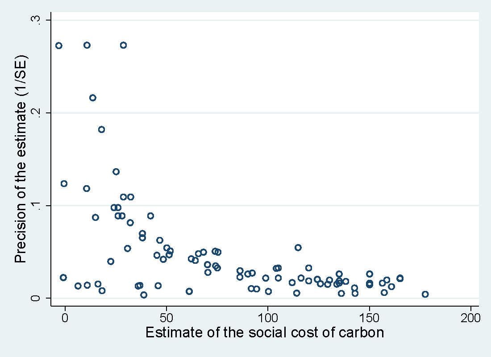

Abstract
We examine potential selective reporting in the literature on the social cost of carbon (SCC) by conducting a meta-analysis of 809 estimates of the SCC reported in 101 studies. Our results indicate that estimates for which the 95% confidence interval includes zero are less likely to be reported than estimates excluding negative values of the SCC, which might create an upward bias in the literature. The evidence for selective reporting is stronger for studies published in peer-reviewed journals than for unpublished studies. We show that the findings are not driven by the asymmetry of confidence intervals surrounding the SCC and are robust to controlling for various characteristics of study design and to alternative definitions of confidence intervals. Our estimates of the mean reported SCC corrected for the selective reporting bias range between 0 and 134 USD per ton of carbon in 2010 prices for emission year 2015.
Fig: Negative estimates are underreported.
Reference: Tomas Havranek, Zuzana Irsova, Karel Janda, and David Zilberman (2015), "Selective Reporting and the Social Cost of Carbon." Energy Econonomics 51, 364-406.